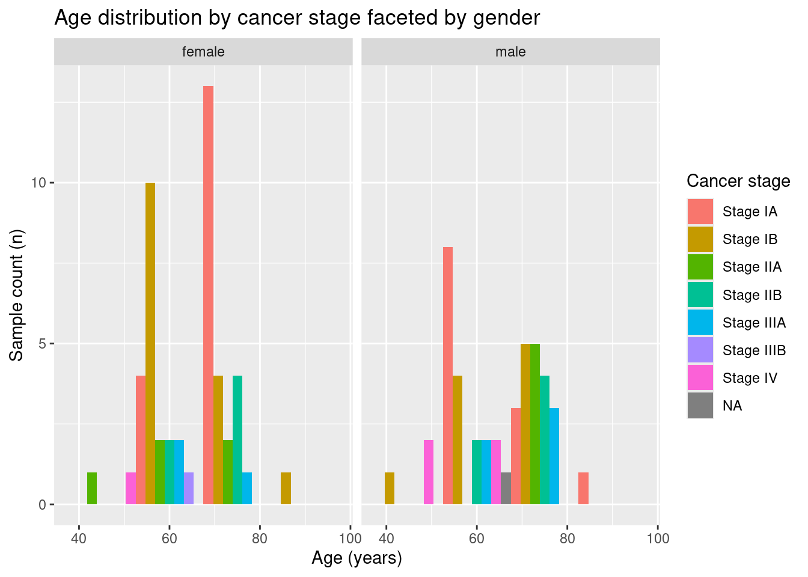

library("tidyverse")
library("here")04_describe
Description of the data
Load libraries
Load the data
clinical_data_augment = read_tsv(here("data/03_clinical_data_augment.tsv"),
show_col_types = FALSE)
count_data_clean = read_tsv(here("data/02_count_data_clean.tsv"),
show_col_types = FALSE)
gene_presence = read_tsv(here("data/02_gene_presence.tsv"),
show_col_type = FALSE)Clinical data
Gender Distribution
This section is divided into two subsections: one describing the clinical data and one describing the count data.
First, we extract the counts for some variables in the data set.
For the gender variable in our data set:
# Count and calculate percentage by gender
clinical_data_augment |>
dplyr::count(gender.demographic)|>
mutate(percentage = n * 100 / sum(n)) # A tibble: 2 × 3
gender.demographic n percentage
<chr> <int> <dbl>
1 female 48 52.7
2 male 43 47.3The dataset is balanced in terms of gender, with nearly equal representation of male and female samples.
Race Distribution
# Count and calculate percentage by race
clinical_data_augment |>
dplyr::count(race.demographic) |>
mutate(percentage = n * 100 / sum(n))# A tibble: 4 × 3
race.demographic n percentage
<chr> <int> <dbl>
1 asian 2 2.20
2 black or african american 7 7.69
3 not reported 1 1.10
4 white 81 89.0 The dataset is unbalanced regarding race, with 89% of samples from white patients.
Cancer Stage Distribution
# Count and calculate percentage by pathologic stage
clinical_data_augment |>
dplyr::count(ajcc_pathologic_stage.diagnoses) |>
mutate(percentage = n * 100 / sum(n))# A tibble: 8 × 3
ajcc_pathologic_stage.diagnoses n percentage
<chr> <int> <dbl>
1 Stage IA 29 31.9
2 Stage IB 25 27.5
3 Stage IIA 10 11.0
4 Stage IIB 12 13.2
5 Stage IIIA 8 8.79
6 Stage IIIB 1 1.10
7 Stage IV 5 5.49
8 <NA> 1 1.10Most samples (~60%) come from patients in Stage I (IA and IB).
Age Statistics
# Calculate mean, median, and standard deviation of age
clinical_data_augment |>
summarise(mean_age = mean(age_at_index.demographic, na.rm = TRUE),
median_age = median(age_at_index.demographic, na.rm = TRUE),
sd_age = sd(age_at_index.demographic, na.rm = TRUE))# A tibble: 1 × 3
mean_age median_age sd_age
<dbl> <dbl> <dbl>
1 66.7 68 9.51Mean age: 66.7 years.
Median age: 68 years.
Standard deviation: 9.5 years.
Smoker Group Distribution
# Count and calculate percentage by smoker groups
clinical_data_augment |>
dplyr::count(smoker_groups) |>
mutate(percentage = n * 100 / sum(n))# A tibble: 4 × 3
smoker_groups n percentage
<chr> <int> <dbl>
1 No information 42 46.2
2 heavy 30 33.0
3 light 7 7.69
4 medium 12 13.2 46% of the dataset lacks smoking information
Heavy smokers (>= 40 pack-years) make up ~33% of the samples.
Average Age by Smoker Group
# Calculate mean age for each smoker group
clinical_data_augment |>
group_by(smoker_groups) |>
summarize(mean_age = mean(age_at_index.demographic, na.rm = TRUE))# A tibble: 4 × 2
smoker_groups mean_age
<chr> <dbl>
1 No information 67.0
2 heavy 66.3
3 light 61.6
4 medium 70 As observed in the table above, the patients from the light smokers group have a lower mean age (61.57 years) compared to the rest of the groups.
Percentage of Alive and Deceased by Gender
# Count and calculate percentage of vital status within each gender
clinical_data_augment |>
dplyr::count(gender.demographic, vital_status.demographic) |>
group_by(gender.demographic) |>
mutate(percentage = n * 100 / sum(n)) |>
ungroup()# A tibble: 4 × 4
gender.demographic vital_status.demographic n percentage
<chr> <chr> <int> <dbl>
1 female Alive 37 77.1
2 female Dead 11 22.9
3 male Alive 27 62.8
4 male Dead 16 37.2The table shows that the majority of patients in the study are still alive. This trend is particularly notable among women, where 77% of the samples represent patients who are alive at the time of the study.
Cancer Stage Distribution by Gender
# Count pathologic stages by gender in wide format
clinical_data_augment |>
dplyr::count(gender.demographic, ajcc_pathologic_stage.diagnoses) |>
spread(ajcc_pathologic_stage.diagnoses, n, fill = 0)# A tibble: 2 × 9
gender.demographic `Stage IA` `Stage IB` `Stage IIA` `Stage IIB` `Stage IIIA`
<chr> <dbl> <dbl> <dbl> <dbl> <dbl>
1 female 17 15 5 6 3
2 male 12 10 5 6 5
# ℹ 3 more variables: `Stage IIIB` <dbl>, `Stage IV` <dbl>, `<NA>` <dbl>The samples are fairly distributed between men and women across most stages, except for Stage IV, where all but one sample comes from men.
Once we have displayed some counts for the relevant variables, we move on to plotting for a clearer visualization:
First, we will create the results folder if it has not been created. Here we will store the plots:
dir.create(here("results"))Warning in dir.create(here("results")):
'/net/pupil1/home/people/s232958/projects/group_15_project/results' already
exists# Plotting samples per smoker group
clinical_data_augment |>
mutate(smoker_groups = factor(smoker_groups,
levels = c("No information",
"light",
"medium",
"heavy"))) |>
ggplot(mapping = aes(x = smoker_groups,
fill = smoker_groups)) +
geom_bar() +
labs(x = "Smoker groups",
y = "Count of samples (n)",
title = "Samples per smoker group",
fill = "Smoker groups")ggsave(here("results/04_samples_per_smoker_group.png"), plot = last_plot() )Saving 7 x 5 in imageHere we have a bar chart showing the count of samples grouped by smoking history. Heavy smokers (>= 40 pack years) are the predominant group (~33%) out of the smokers, while ~46% of samples lack meaningful smoking data.
# Plotting samples per gender
clinical_data_augment |>
ggplot(mapping = aes(x = gender.demographic,
fill = race.demographic)) +
geom_bar() +
labs(x = "Gender",
y = "Count of samples(n)",
title = "Samples per gender and race",
fill = "Race")ggsave(here("results/04_samples_per_gender_race.png"), plot = last_plot() )Saving 7 x 5 in imageThis is a bar chart displaying the count of samples categorized by gender relatively balanced, with almost an equal number of samples for males and females.
# Plotting samples per cancer stage
clinical_data_augment |>
ggplot(mapping = aes(x = ajcc_pathologic_stage.diagnoses,
fill= ajcc_pathologic_stage.diagnoses)) +
geom_bar() +
labs(x = "Cancer stage",
y = "Count of samples (n)",
title = "Samples per cancer stage",
fill= "Cancer stage")ggsave(here("results/04_samples_cancer_stage.png"), plot = last_plot() )Saving 7 x 5 in imageThis bar chart shows the distribution of samples across different cancer stages, representing ~60% of the samples from patients in Stage I.
# Plotting age distribution
clinical_data_augment |>
ggplot(mapping = aes(x = age_at_index.demographic)) +
geom_histogram(binwidth = 3,
fill = "lightblue", color = "black") +
labs(x = "Age (years)",
y = "Count of samples (n)",
title = "Distribution of ages")ggsave(here("results/04_age_histogram.png"), plot = last_plot())Saving 7 x 5 in imageThis histogram illustrates the age distribution of the samples. The majority of patients are aged between 60 and 75, with a mean age of 66.7 and a median age of 68.
# Plotting of age distribution by cancer stage
clinical_data_augment |>
ggplot(mapping = aes(x = ajcc_pathologic_stage.diagnoses,
y = age_at_index.demographic,
fill = ajcc_pathologic_stage.diagnoses)) +
geom_boxplot() +
labs(x = "Cancer stage",
y = "Age (years)",
title = "Age distribution by cancer stage",
fill = "Cancer stage")ggsave(here("results/04_age_cancer_stage.png"), plot= last_plot() )Saving 7 x 5 in imageThis boxplot compares the age distributions of patients across different cancer stages. Samples belonging to stage IV patients present a range of ages lower compared to prior stages.
# Plotting vital status vs. age at diagnosis
clinical_data_augment |>
ggplot(mapping = aes(x = vital_status.demographic,
y = age_at_index.demographic,
fill = vital_status.demographic)) +
geom_boxplot() +
labs(x = "Vital status",
y = "Age at diagnosis (years)",
title = "Vital status vs age at diagnosis",
fill= "Vital status")
ggsave(here("results/04_vital_status_vs_age.png"), plot = last_plot() )Saving 7 x 5 in imageHere we have a boxplot comparing the age at diagnosis of patients grouped by their vital status. The majority of patients in the dataset are alive.
# Plotting smoker groups within each cancer stage
clinical_data_augment |>
ggplot(mapping = aes(x = ajcc_pathologic_stage.diagnoses,
fill = smoker_groups)) +
geom_bar(position = "fill") +
labs(x = "Cancer stage",
y = "Proportion of smoker group",
title = "Smoker groups within each cancer stage",
fill = "Smoker groups")ggsave(here("results/04_smoker_groups_within_cancer_stage.png"), plot = last_plot() )Saving 7 x 5 in imageThis is a stacked bar chart showing the proportion of smoker groups for each cancer stage. The most remarkable situation is that all the samples regarding stage IIIB belong to heavy smokers.
# Plotting cancer stage within each smoker group
clinical_data_augment |>
ggplot(mapping = aes(x = smoker_groups,
fill = ajcc_pathologic_stage.diagnoses)) +
geom_bar(position = "fill") +
labs(x = "Smoker group",
y = "Proportion of cancer stages",
title = "Cancer stage within each smoker group",
fill = "Cancer stage")ggsave(here("results/04_cancer_stage_within_smoker_group.png"), plot = last_plot() )Saving 7 x 5 in imageHere is a stacked bar chart showing the proportion of cancer stages within each smoker group . In all the smoker groups the predominant stage of cancer is Stage IA and IB.
# Plotting gender distribution within cancer stages
clinical_data_augment |>
ggplot(mapping = aes(x = ajcc_pathologic_stage.diagnoses,
fill = gender.demographic)) +
geom_bar(position = "fill") +
labs(x = "Cancer stage",
y = "Gender",
title = "Gender distribution within cancer stages",
fill = "Gender")ggsave(here("results/04_gender_within_cancer_stages.png"), plot = last_plot() )Saving 7 x 5 in imageHere is a stacked bar chart showing the distribution of genders within each cancer stage. In earlier stages of cancer there is a balance distribution between genders, while in later stages we have a predominance of male samples (Stage IV).
# Plotting age distribution by cancer stage, faceted by gender
clinical_data_augment |>
ggplot(aes(x = age_at_index.demographic,
fill = ajcc_pathologic_stage.diagnoses)) +
geom_histogram(binwidth= 15,
position = "dodge") +
facet_wrap(~gender.demographic) +
labs(title = "Age distribution by cancer stage faceted by gender",
fill = "Cancer stage",
x = "Age (years)",
y = "Sample count (n)")
ggsave(here("results/04_age_by_cancer_stage_gender.png"), plot = last_plot() )Saving 7 x 5 in imageHere we have a faceted histogram showing the age distribution within each cancer stage, separated by gender. The distribution differ a lot between male and female samples.
# Plotting age at diagnosis by race
clinical_data_augment |>
group_by(race.demographic) |>
filter(n() >= 2) |> # Here we keep only the races with more than 2 samples for a clearer representation
ungroup() |>
ggplot(aes(x = race.demographic,
y = age_at_index.demographic,
fill = race.demographic)) +
geom_violin() +
labs(title = "Age at diagnosis by race",
x = "Race",
y = "Age at diagnosis (years)",
fill = "Race")ggsave(here("results/04_age_by_race_violin.png"), plot = last_plot() )Saving 7 x 5 in imageHere we have a violin plot comparing the age distribution at diagnosis for different races. For samples from Asians the distribution is narrower and this indicates that there is less variation in the age at diagnosis. Whites have a wider range of age at diagnosis.
# Plotting age at diagnosis by gender
clinical_data_augment |>
ggplot(aes(x = gender.demographic,
y = age_at_index.demographic,
fill = gender.demographic)) +
geom_violin() +
labs(title = "Age at diagnosis by gender",
x = "Gender",
y = "Age at Diagnosis (years)",
fill = "Gender")ggsave(here("results/04_age_by_gender_violin.png"), plot = last_plot() )Saving 7 x 5 in imageThis is a violin plot comparing the age distribution at diagnosis between genders. In males the diagnoses are mostly around one age group (70 years old) while for females the diagnosis are in two main age groups (60 and 70 years old) .
Count data
Histogram displaying the frequency of the genes across the samples
gene_presence |>
ggplot(aes(x = samples_present)) +
geom_histogram(binwidth = 5,
fill = "lightblue",
color = "black") +
labs(title = "Distribution of gene presence",
x = "Number of samples a gene is present in (n)",
y = "Frequency of genes") ggsave(here("results/04_gene_presence_distribution.png"), plot = last_plot() )Saving 7 x 5 in imageThis is a histogram displaying the distribution of gene presence across the samples. Most of the genes are present in a large number of samples.